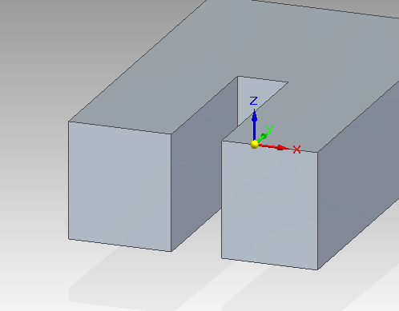

Assembly Relationships Manager
Overview
The Assembly Relationships Manager displays a table of assembly relationships and provides a way to modify relationships. Starting the command with occurrences selected displays the relationships associated with those occurrences. If no occurrences are selected, the command shows all of the relationships for the assembly. The relationships are analyzed and displayed. You can edit relationship values within the dialog box, such as changing an offset type from Fixed to Float, and the Offset value as well. If a relationship has an associated variable, that variable name is displayed instead of the relationship type.
You can use the Relationship Repair button to fix many relationship problems, if there are any. This walks through the sick relationships, suppressing them one by one until there are no longer any failures or until all of the sick relationships have been suppressed. After the process is complete, you are presented with the list of relationships that were suppressed to fix the problems, and you are given the option to keep them suppressed or delete them. Since this is an iterative process, it can take some time, especially with large assemblies with very large numbers of relationships. Because of this, you can press the Esc key at any time to cancel the process.
You can activate the Assembly Relationships Manager by right-clicking a part or subassembly in Assembly PathFinder.
If a relationship exists that is causing an error condition, you can open the Assembly Relationships Manager using the Tools tab→Assistants group→Errors Assistant command.
Tooltips
When moving the mouse over a relationship in the table (and pausing), a tooltip is displayed. The contents of the tooltip depends on the relationship status. The status can be:
-
Solved—Displays the occurrence hierarchy for each of the components in the relationship.
-
Failed —A failure message suggests repairing, suppressing, or deleting the relationship.
-
Out of Date - Status —Displays a message about the relationship status being out of date and suggesting an update or repair.
-
Out of Date - Face —Displays a message about one of the relationship faces being out of date and suggesting and update or repair.
-
Split Face—Displays a message about one of the relationship faces being split.
-
Missing Geometry—Displays a message giving the part name from which the geometry is missing.
Split Faces
When one of the faces involved in a relationship has been split into multiple faces, it is not technically a failure but can still lead to undesirable behavior. The relationship still solves, but it can use any one of the multiple faces resulting from the split, which could cause one of the parts to jump to an undesired location. In this example, the two small front faces were a single large face when the relationship was created.

When a relationship has one of these split face scenarios, a gray arrow is displayed next to the relationship and the group containing the relationship, except when grouped by status. This shows that there are relationships that could be causing the unexpected behavior.
Highlight and Selection Colors
When a relationship is missing geometry, the face is not displayed as highlighted or selected. Instead, the component name of the missing geometry is displayed in red when the relationship is highlighted or selected.
When a face is out of date (as opposed to something else with the relationship being out of date), the face is displayed in a blue color when the relationship is highlighted or selected.
Context menu
You can display the relationship search and selection context menu by right-clicking on the Relationships column header or on empty table space. You can use these commands to modify the font and font size to make the table easier to read. You can search for text strings. You can change the table display using the grouping commands.
Options available:
- Font
-
Modifies font and font size for the display.
- Find
-
Searches for a text string in the display.
- Expand
-
Searches for a text string in the display.
Expands the display of selected items.
- Expand All
-
Expands the display of all items.
- Collapse All
-
Collapse the display of all items.
- Grouping
-
Groups the display by:
-
None
-
Type
-
Component
-
Status
-
Filters
You can further narrow the selection results by clicking the Filters button . Results can be filtered by Type or Status.
Relationship editing
- Double-click behavior
-
-
Double-clicking a relationship item starts Edit Definition for that relationship. If the relationship is sick for something such as a missing face, the selection step for that face will be available on the command bar.
-
Double-clicking a component item under a relationship in-place edits the component.
-
For those relationships that support offsets, the following edits can be made:
-
The offset value can be modified, unless there is a formula controlling the offset.
-
Offset type can be changed between fixed, floating and range unless there is a formula controlling the offset.
For the Angle relationship, the following edits can be made:
-
The angle value can be modified, unless there is a formula controlling the angle.
-
Angle type can be changed between fixed and range unless there is a formula controlling the angle.
For the Gear relationship, the two gear values can be modified, unless there is a formula controlling them.
For those relationships that support flipping, they can be flipped using either the context menu command or using the f key on the keyboard. Flip will work with multiple relationships selected, so several relationships can be flipped at the same time.
Flipping several relationships at the same time is often the only way the relationships will successfully flip.
For axial relationships, the rotation can be locked or unlocked using the context menu command. Locking or unlocking rotation works with multiple relationships selected, so several relationships can be locked or unlocked at the same time.
If a relationship is associated with a variable (such as offsets or angles), the relationship variable can be renamed using the Rename Variable command on the context menu.
Undo is supported for most edit operations.
Accelerator Shortcut Keys
The following accelerator shortcut keys are supported:
|
F |
Flip selected relationships |
|
S |
Suppress selected relationships |
|
U |
Unsuppress selected relationships |
|
R |
Relationship Repair (Same as button) |
|
Delete |
Delete selected relationships |
|
CTL+A |
Select All |
|
CTL+D |
Select None |
How do I
Using the Mate commandModify the offset value for a Mate relationship
Using the Planar Align command
Apply an axial align relationship
Insert a part in an assembly
Apply a connect relationship
Using the Angle command
Using the Tangent command
Place a cam relationship
Apply a path relationship
Using the Parallel command
Apply a gear relationship
Using the Center-Plane command
Place a Rigid Set relationship
Using the Ground command
Update the working environment
Look up more details
About the FlashFit relationshipAbout the Mate relationship
About the Planar Align relationship
About the Axial Align relationship
About the Insert relationship
About the Connect relationship
About the Angle relationship
About the Tangent relationship
About the Cam relationship
About the Path relationship
About the Parallel relationship
About the Gear relationship
Position two parts by matching their coordinate systems
About the Match Coordinate Systems relationship
About the Center-Plane relationship
About the Rigid Set relationship
About the Ground relationship
Update Relationships command